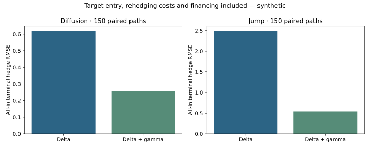

Quantitative Trading Research
From hypothesis to fills, risk and a decision
Research by Anjaney Malhotra · engineering undergraduate · reproducible code, explicit assumptions and recorded results.
Systematic strategies and execution
Can a signal survive execution constraints? Targets become cash-constrained integer orders with FIFO/IOC fills. A positive execution replay is not evidence that the separate signal beats its benchmark.

Calculation
Target units = floor(weight × equity / price). Wealth after fills = wealth before fills − fees − slippage.
Derivatives risk and hedging
Compare hedge error, fees and downside together. Delta-gamma hedging reduces simulated RMSE but has negative mean P&L; jump-case lower-tail losses worsen.

Calculation
Approximate option change = delta·ΔS + ½gamma·ΔS² + vega·Δvol + theta·Δtime.
Tail-risk optimisation
Independent CVaR solvers use identical constraints. Agreement checks mathematical implementation; held-out synthetic outcomes include losses.

Calculation
Minimise eta + mean(max(loss − eta, 0))/(1 − alpha).